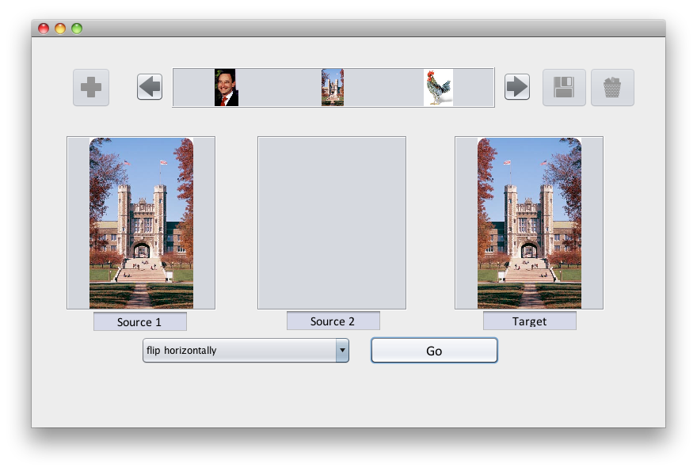
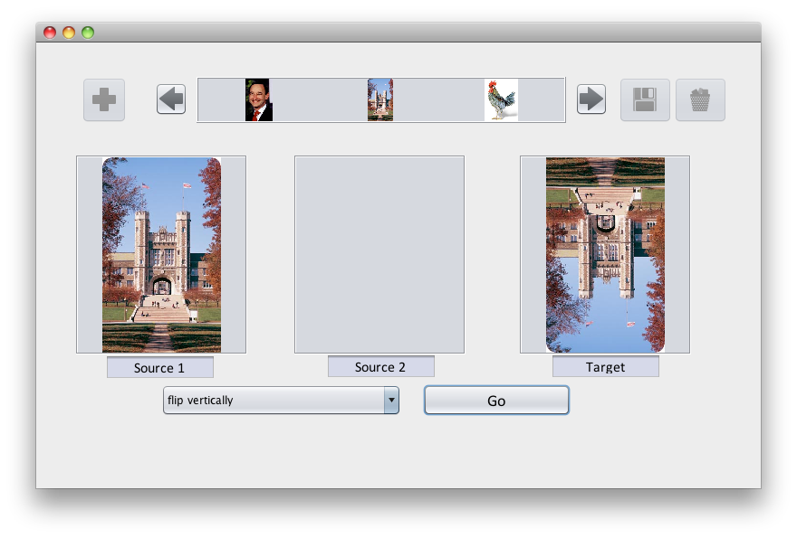
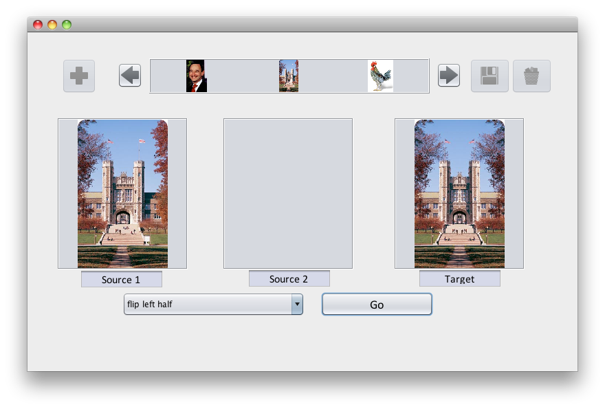
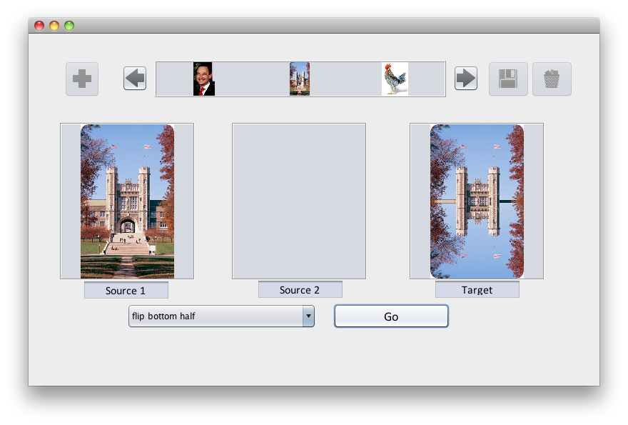
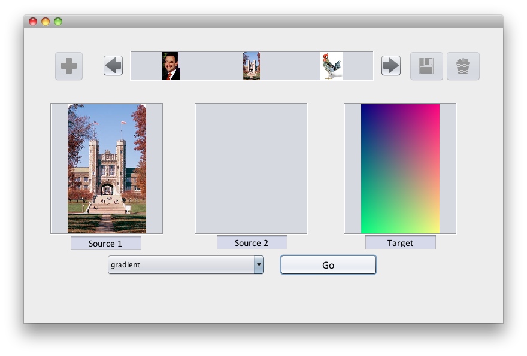

Extension for Module 2:
Extension 2.1: Image Processor with Iteration (6 points)
Authors
- Ron Cytron
- Ken Goldman
- Logan Sorentino
Manipulating an Image Raster
In the imagetransforms package, modify the provided Transforms Java program to implement the methods as described below. Your methods will use iteration (either while loops or for loops) to operate on the pixels of a picture.
Notes
-
To run this extension, right (control) click on Main and choose Run as… then Java Application.
This extension uses the same base code as the filter extension.
-
The Picture class is a Sedgewick class whose API is documented on page 720 of our text. The coordinates are expressed using the standard in computer science graphics: the coordinate (x,y) denotes the pixel that is
- x pixels to the right of the leftmost edge of the picture
- y pixels down from the top edge of the picture
Thus, (0,0) is the top left corner of the picture.
-
Pixel addressing follows the common Java convention: if there are w horizontal pixels, then 0 is the first (leftmost) and w-1 is the last (rightmost).
-
Almost all of the methods are written in terms of two Picture parameters:
- source: the picture to be used as input to your transformation
- target: the picture area to be used as output from your transformation
There is just one exception: the gradient method produces its output without needing a source. Its only parameter is target.
-
Each Picture has a width and a height, and these can be obtained for a Picture p as follows:
int width = p.width(); int height = p.height(); -
To find the Color of a pixel at location x,y, you use
Color c = source.get(x,y); -
To set the Color of a pixel at location x,y to the color c, you use
target.set(x,y,c);
Instructions
Each of the methods described below is found in the Transforms class.
-
The provided method flipHoriz(Picture source, Picture target) flips the image horizontally.

Look at the code given to you for this example carefully. It is broken into simple steps and the comments help explain why the pixel indexing works.
-
Complete the method flipVert(Picture source, Picture target) that flips the image vertically.

-
Complete the method flipHorizLeftHalf(Picture source, Picture target) that flips the left half of the image horizontally.
The left half of the target image should be same as the source, but the right half of the target image should be the mirror of the left half of the source.

-
Complete the method flipVertBotHalf(Picture source, Picture target) that flips the bottom half of the image vertically.

-
Complete the method gradient(Picture target) that takes a single Picture as a parameter.
Your code should create a color gradient by computing the following for each pixel:
- The amount of red in each pixel increases gradually from 0 at the left edge of the image, to 255 at the right edge of the image.
- The amount of green in each pixel increases gradually from 0 at the top edge of the image, to 255 at the bottom edge of the image.
- The amount of blue in every pixel should be 128.
Thus, each pixel will have a different color depending on its position. For example, the pixel at the top left will have red=0, green=0, and blue=128. The pixel about 1/4 of the way down on the right edge will have red=255, green=64, and blue=128.
Develop an expression for the amount of red and green in each pixel, given the x and y position of that pixel and the width and height of the image:
int amountRed = .....int amountGreen = ....Then set the pixel at (x,y) to a color based on those computations:
target.set(x, y, new Color(amountRed, amountGreen, 128));
Submitting your work
To submit your work, contact the instructor or a TA. They will walk you through the submission process. Be prepared to show them the work that you have done and answer their questions about it!
Extension 2.2: Rock, Paper, Scissors (5 points)
Authors
The game of Rock-Paper-Scissors (hereafter, RPS) is a two-player game that can be used to avoid boredom and to settle disputes.
In this lab you will simulate two players: one plays randomly while the other rotates faithfully from rock to paper to scissors. Your task is to simulate this game and to report the fraction of games won by each of the two players.
Procedure
Find the RockPaperScissors package in the labs source folder.
Create a new class RPS there, and you are ready to begin your development.
It is suggested that you develop code in small steps, so that you can proceed from confidence to confidence, and not have a big pile of untested code to debug at the end.
To help motivate this approach, the TAs will not help you unless you have shown progress based on these steps. Ask for help as soon as you need it, but please follow the steps below > so that you can gain confidence.
The steps you might consider are as follows:
-
What inputs does your program need? First, get your program to accept those inputs and print them out so you can see they are set properly.
This means that you should type in the code to prompt the user for the input(s), print out the values of those inputs, and that's all for now. Run your program at this point and make sure it is behaving as you want. What inputs do you need? There's no reason to ask for more than is necessary. At a minimum, you have to know how many rounds of RPS to play before printing the resulting statistics
-
Next, create a loop that simply iterates the desired number of times.
Again, run your program. You may want to print something out in your loop so you can verify that the loop works correctly.
-
You next can make the concept of the random player real. This means declaring a variable name of a suitable type to represent this concept, establishing the variable's initial value.
What is the concept of the player? There are many details about the player that appear unnecessary: the player's name, address, cell phone number.
On the other hand, if we are going to play RPS, we need to know what move the player > has made. This is the important concept.
How do we represent the choice of rock, paper, or scissors? This is left up to you, so try for something simple. It may help to recall how Paul Revere was (poetically) told of how the British were coming: one if by land, two if by sea.
In otherwords, an
intencoded the manner of invasion.If there were only two choices, why didn't Paul use a
boolean? Sadly, Bool was not yet born -
In your loop, you should modify this variable's value to reflect the associated player choosing randomly among rock, paper, and scissors each iteration.
You've seen how to use the random number generator to pick between two outcomes. Now you must pick between three.
-
Run your program and verify that the player is choosing randomly.
-
OK, now for the other player. This player must cycle among rock, paper, and scissors. Let's make this player real by declaring a variable name of a suitable type and establishing its initial value.
In the interest of consistency and simplicity, you should use the same encoding for this player in terms of what value means rock, what value means paper, and what value means scissors.
-
In your loop, arrange for this player to choose its next move based on its previous move. If the move used to be rock, it's now paper. If the move used to be paper, it's now scissors. If the move was scissors, it's now rock.
-
Run your program again and make sure the cycling player is behaving properly.
To verify the cycling player's behavior, you will probably want to print out the values representing that player's move each iteration.
It won't take many iterations to see if this is working or not: 10 should do.
-
Each player has made a move; now let's see who won. First, pick a name, type, and initial value for the number of wins a player has. Do the same for the other player.
Why do we need a variable to keep track of each player's wins? Why not keep track of only one player's wins and assume the other player won the other rounds?
-
In the loop, determine who won based on the current value of each player's move.
Use the rules of RPS to adjudicate the winner, and credit the win count properly.
-
After the loop completes, report the fraction of wins awarded to each of the two players.
-
Test your code by trying it with just one iteration, two iterations, and three iterations. Make sure it's working before you set it loose.
-
Run your code several times, each on 1000 iterations.
-
Based on what you see, did one player tend to win more often than the other?
Submitting your work
To submit your work, contact the instructor or a TA. They will walk you through the submission process. Be prepared to show them the work that you have done and answer their questions about it!
Extension 2.3: Mario (4 points)
Authors:
- Nathan Vogt
- Elie Schramm
- Dotun Taiwo
Mario, created in 1981 by Nintendo, is a classic video game starring the fictional Italian character Mario. In the assignment, loops printing hashtags will be used to build the block mountains as seen in the picture.

The code for this assignment will be unit-tested, which means that we have an automatic way to determine if your code is producing the correct output. For the unit testing to work, you must follow the instructions below carefully.
- Find and open the Java class Mario in the mario package of your extensions folder.
-
Your program must frist prompt the user for two integer inputs using ArgsProcessor. These must be requested in the following order:
size
What is the size of the mountain? In the picture above, the mountain has size 5 because there are 5 levels of squares, and the widest part of the mountain, at its bottom, is also 5 squares. A mountain will always be a square structure containing size×size elements, some of which are hashtags (#) and some of which are blanks.
pattern
We will use an integer in the range 1 to 4 to indicate which pattern your program should produce. In the picture above, pattern 1 is shown. The other patterns are explained below
- Your program then prints the mountain of the specified size and pattern.
-
Mario runs from left to right. Create a mountain that he would have to climb, as shown in the example for a size 5 mountain.
# ## ### #### ##### -
Create a mountain that he would descend, as shown below for a size 3 mountain.
# ## ### -
Make a mountain that resembles pattern 1, but flipped upside-down. Below is shown a size 7 mountain for this pattern.
####### ###### ##### #### ### ## # -
Make a mountain that resembles pattern 2, but flipped upside down. Below is shown a size 4 mountain for this pattern.
#### ### ## #
Try running your Mario class and test yourself using various sizes (say, 1 to 10) and patterns (always an integer from 1 to 4).
Run the unit test by right (control) clicking on MarioTest and running it as you would any other program.
If you see a green bar, then the test ran correctly. If it’s red, you have a problem with your solution. The output shown in the console window should help you determine what is wrong.
Submitting your work
To submit your work, contact the instructor or a TA. They will walk you through the submission process. Be prepared to show them the work that you have done and answer their questions about it!